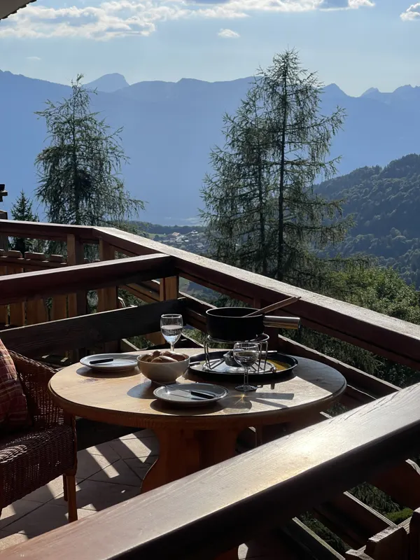

Отели Виллара быстро заполняются в школьные выходные, а в одном номере с подростком и его друзьями быстро становится тесно. Le Bristol A46 — апартаменты с одной спальней до 4 человек, с двумя ванными, двумя балконами, мини-кухней и крытым бассейном с подогревом в доме. Тихое место, где всей семье просторно, а местный офис Interhome в Вилларе — чуть дальше по той же улице, если что-то понадобится.

Коротко
- До 4 гостей: спальня с двумя кроватями и двуспальный диван-кровать
- 2 ванные, 2 балкона
- Крытый бассейн с подогревом, лифт, лыжная комната
- Wi-Fi, мини-кухня с наборами для фондю и раклета
- 500 м до центра Виллара и вокзала
Где это относительно Beau Soleil
Beau Soleil (Collège Alpin International Beau Soleil) находится на Route du Village в центре Виллар-сюр-Оллон. Le Bristol — на Avenue Centrale 164, примерно в 500 м от центра деревни, так что до школы около 10 минут пешком.
Машину можно оставить на парковке и ходить пешком — в школу, в магазины и рестораны деревни и на вокзал Виллара.
Для школьных визитов
День приезда
Помогите ребёнку устроиться, а затем пешком вернитесь в квартиру, где есть место, чтобы разобрать вещи, и кухня для простого ужина.
Выходные & каникулы в середине триместра
Диван-кровать для брата, сестры или друга, две ванные и бассейн с подогревом в доме.
Спектакли, матчи & родительские мероприятия
Несколько ночей рядом со школой — и не нужно каждый раз есть в ресторане.
Выпускной
Отпразднуйте фондю на балконе с видом на долину.
Как добраться до Виллара
- Из аэропорта Женевы на поезде: прямые поезда идут вдоль Женевского озера до Бе, а оттуда маленькая горная железная дорога поднимается в Виллар. Закладывайте около 2 часов.
- На машине: около 1 часа 30 минут от Женевы, съезд с автомагистрали у Эгля или Бе. Зимой проверьте, нужны ли цепи на колёса.
- Из Цюриха: около 3 часов на поезде.



Частые вопросы семей
Как далеко апартаменты от Beau Soleil?
Beau Soleil находится на Route du Village в центре Виллара. Апартаменты примерно в 500 м от центра деревни, так что пешком около 10 минут.
Сколько человек можно разместить?
До 4: две односпальные кровати в спальне и двуспальный диван-кровать в гостиной. Ванных комнат две.
Нужна ли машина?
Нет. Школа, магазины и вокзал Виллара — в пешей доступности, а зимой бесплатный лыжный автобус останавливается в 20 м от дома.
Когда бронировать?
Как только выйдет школьный календарь. Начало и конец триместра, каникулы и выпускной быстро заполняют Виллар, особенно в февральский лыжный сезон.
Кто занимается бронированием?
Бронированием и оплатой занимается Interhome — компания по аренде жилья для отдыха. Её местный офис в Вилларе, на Avenue Centrale, отвечает за ключи, уборку и любую помощь во время вашего пребывания.
Чем заняться с ребёнком на выходных — смотрите, что есть зимой и что есть летом.
Le Bristol A46 — частные апартаменты, сдаваемые через Interhome. Мы не связаны с Beau Soleil. Расстояния и время в пути приблизительны, поэтому перед поездкой сверьтесь с расписанием и школьным календарём.